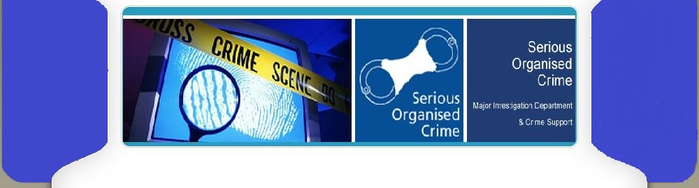

1/3

"The only thing necessary for the triumph of evil is for good men to do nothing." - Edmund Burke
2/3

"Crime can only flourish where good people are indifferent." - Elijah Lovejoy
3/3

"Safety is not a product; it's a process. We must work together to create a safe and secure environment."
Lucknow Speical News
This Lucknow crime webpage empowers you with resources and news to stay informed and safe. Report crimes online, find safety tips, or join community watch programs. Get informed with concise summaries of recent incidents in Lucknow and access detailed reports with a click. Stay alert for critical updates in the Notifications section (if available). Together, let's build a safer Lucknow by being informed and engaged citizens!
Important Reporting Sites
Report a Crime Online: Report crimes conveniently and directly from this webpage. Click here
Lucknow Police Citizen Portal: Access a range of resources and services offered by Lucknow Police. Click here
Safety Tips for Lucknow Residents: Learn valuable tips to protect yourself and your belongings. Click here
Community Watch Programs in Lucknow: Get involved and collaborate with your community to enhance safety. Click here
Report Suspicious Activity: Don't hesitate to report suspicious activities. Click here
Notifications
New criminal laws to be implemented from July 1 Click here
New criminal laws to come into force on 1-07-2024 Click heres
National Crime Records Bureau (NCRB) Click here
New Criminal Laws Click here
Digital Police: Ministry of Home Affairs Click here